Every number on this page was read from the saved result files in the repository and recomputed where possible. Two studies are covered: phase 1 (50 agent tasks, 300 scored runs) and phase 2 (16 synthetic Indian office tasks, 192 scored runs per campaign). Compiled 21 Nov 2026.
paper_kit/tables, paper_kit/figures and output/pdf/report_data.| Phase 1 (completed Oct 2026) | Phase 2, suite v2.1 (primary, 18 Nov 2026) | |
|---|---|---|
| Tasks | 50 task units from a general agent benchmark (8 categories) | 16 synthetic tasks, 2 per Indian domain (8 domains) |
| Factors | 3 instruction languages × 2 models | 3 instruction languages × 2 workspace languages × 2 models |
| Models | GPT-OSS-20B (medium reasoning) and Nemotron 3 Super (thinking on) | GLM-5.3-Flash and Nemotron 3 Super (both high thinking, temperature 0) |
| Scored conditions | 300 (150 per model) | 192 (96 per model) |
| Primary outcome | Mean task score 0-100 (partial credit) | Correct output: result file fully correct (all fields) |
| Headline | Nemotron 51.21 vs GPT-OSS 39.98 mean score; language intervals include zero | 76.0% correct overall; English files 84.4% vs Hindi files 67.7% |
phase2/archive/v1-easy/.phase2/DESIGN-v2.md (input rows, output rows, scored fields, Hindi bytes, rules ablated).| Limit | Phase 2 | Phase 1 |
|---|---|---|
| Tokens per model response | 32,768 | 4,096 |
| Output tokens per attempt | 65,536 | 16,000 |
| Input tokens per attempt | 600,000 | 200,000 |
| Model requests per attempt | 40 | 30 |
| Wall time per attempt | 1,200 s | ≤ 600 s |
| Agent context window | 131,072 | n/a |
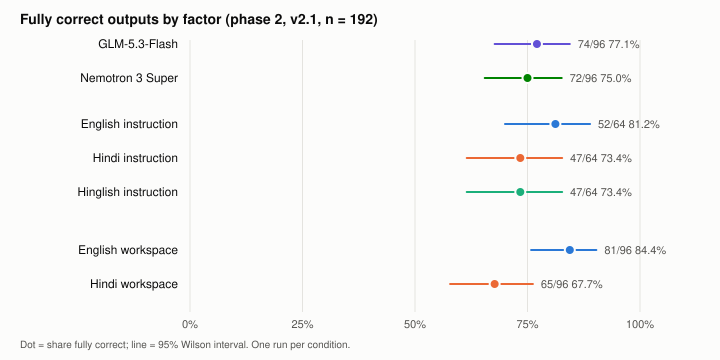
| Group | n | Correct | % | 95% CI | Within budget | Mean field score | Mean input tok | Mean output tok | Median time (s) |
|---|---|---|---|---|---|---|---|---|---|
| All | 192 | 146 | 76.0 | 69.5-81.5 | 142 | 90.4 | 98,549 | 24,375 | 163 |
| GLM-5.3-Flash | 96 | 74 | 77.1 | 67.7-84.4 | 73 | 97.1 | 113,238 | 13,350 | 79 |
| Nemotron 3 Super | 96 | 72 | 75.0 | 65.5-82.6 | 69 | 83.6 | 83,860 | 35,399 | 367 |
| English instruction | 64 | 52 | 81.2 | 70.0-88.9 | 51 | 89.5 | 100,857 | 27,952 | 161 |
| Hindi instruction | 64 | 47 | 73.4 | 61.5-82.7 | 46 | 91.3 | 108,583 | 21,864 | 169 |
| Hinglish instruction | 64 | 47 | 73.4 | 61.5-82.7 | 45 | 90.3 | 86,207 | 23,308 | 170 |
| English workspace | 96 | 81 | 84.4 | 75.8-90.3 | 80 | 95.0 | 90,617 | 21,779 | 160 |
| Hindi workspace | 96 | 65 | 67.7 | 57.8-76.2 | 62 | 85.7 | 106,481 | 26,971 | 180 |
| Cell | Correct /48 | % | 95% CI | Mean field score | Mean input tok | Mean output tok | Median time (s) |
|---|---|---|---|---|---|---|---|
| GLM · English files | 42 | 87.5 | 75.3-94.1 | 98.6 | 97,707 | 11,737 | 76 |
| GLM · Hindi files | 32 | 66.7 | 52.5-78.3 | 95.7 | 128,770 | 14,963 | 83 |
| Nemotron · English files | 39 | 81.2 | 68.1-89.8 | 91.3 | 83,528 | 31,820 | 317 |
| Nemotron · Hindi files | 33 | 68.8 | 54.7-80.1 | 75.8 | 84,192 | 38,978 | 411 |
| English instr. | Hindi instr. | Hinglish instr. | |
|---|---|---|---|
| GLM (of 32) | 27 (84.4%) | 24 (75.0%) | 23 (71.9%) |
| Nemotron (of 32) | 25 (78.1%) | 23 (71.9%) | 24 (75.0%) |
| English files (of 32) | 29 (90.6%) | 26 (81.2%) | 26 (81.2%) |
| Hindi files (of 32) | 23 (71.9%) | 21 (65.6%) | 21 (65.6%) |
| Comparison | Pairs | Both correct | Neither | Only first | Only second | Exact McNemar p* |
|---|---|---|---|---|---|---|
| Workspace: English vs Hindi | 96 | 59 | 9 | 22 | 6 | 0.0037 |
| Instruction: English vs Hindi | 64 | 44 | 9 | 8 | 3 | 0.23 |
| Instruction: English vs Hinglish | 64 | 37 | 2 | 15 | 10 | 0.42 |
| Instruction: Hindi vs Hinglish | 64 | 40 | 10 | 7 | 7 | 1.00 |
| Model: GLM vs Nemotron | 96 | 52 | 2 | 22 | 20 | 0.88 |
*Computed for this fact sheet, not part of the project's own reports: two-sided exact sign test on discordant pairs, unadjusted for multiple comparisons, and pairs are not independent (they share tasks). The project's stated position is "exploratory, no significance claims". If you report it, report it with those caveats or leave it out.
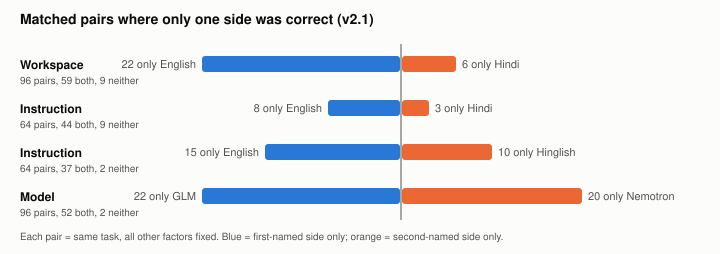
| Outcome | Meaning | GLM | Nemotron | Total |
|---|---|---|---|---|
| full | all fields correct, within budget | 73 | 69 | 142 |
| correct, over budget | file fully correct, run hit the output budget | 1 | 3 | 4 |
| partial | valid file, some fields wrong | 21 | 8 | 29 |
| partial, over budget | partial file at the output budget | 0 | 2 | 2 |
| no output, budget | all 65,536 output tokens used, no file written | 0 | 13 | 13 |
| format error | wrong header or duplicate key | 1 | 1 | 2 |
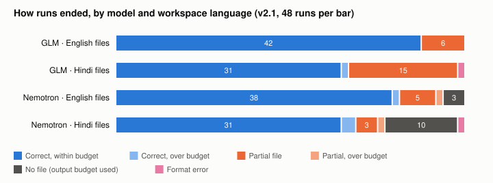
| Cell (48 runs each) | Correct | Partial | No file (budget) | Format error |
|---|---|---|---|---|
| GLM · English files | 42 | 6 | 0 | 0 |
| GLM · Hindi files | 32 | 15 | 0 | 1 |
| Nemotron · English files | 39 | 6 | 3 | 0 |
| Nemotron · Hindi files | 33 | 4 | 10 | 1 |
Correct includes correct-over-budget; partial includes partial-over-budget.
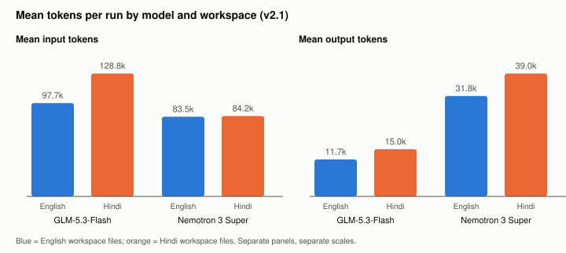
| When | Event |
|---|---|
| 17 Nov | v2 campaign results/final: 192 conditions. Stopped twice on dropped provider streams (task 02); resumed by hand. 2 infrastructure failures, each retried once. |
| 17 Nov | Audit of every non-perfect v2 output, including re-solving each task under literal readings of undocumented value forms. |
| 17 Nov | v2.1 built: glossary appended, v2 files archived with SHA-256 sums, offline validation re-run. Runtime change: a dropped stream no longer stops the campaign; three provider failures in a row still do. |
| 17 Nov 22:25 | Short provider outage: 4 conditions on task 05 failed to connect; the three-in-a-row rule stopped the run as designed. Resumed after connectivity check. |
| 18 Nov 02:20 | v2.1 campaign results/final-v21 finished: 183 graded, 9 infrastructure failures (all provider transport). |
| 18 Nov 03:09 | One recovery attempt for each of the 9 (user-authorised): 7 fully correct, 2 out of output budget. Primary records kept. |
| Task | Defect | Effect in v2 |
|---|---|---|
| 14 Lab flags | Results mix test codes and names (HB, Hemoglobin); the notice never said which form the output must use. | All 6 GLM outputs score 100 once names map to codes; officially 0. |
| 06 Seed allocation | Varieties appear as a code (WHEAT) and as a cultivar name (Wheat HD-2967); Hindi requests use both लघु किसान and छोटा किसान. The notice only promised case and spacing variation. | 7 of 11 non-perfect outputs match the literal reading exactly or almost exactly. |
| 12 Delivery audit | डिब्बे vs डिब्बा as unit forms | 1 run |
| 13 Appointment rebooking | STD vs standard | some Nemotron runs |
| 04 Exam seating | AM vs Morning | minor |
| Outcome | v2 | v2.1 |
|---|---|---|
| full (correct, within budget) | 116 | 142 |
| correct, over budget | 4 | 4 |
| Correct output total | 120 (62.5%) | 146 (76.0%) |
| partial | 46 | 29 |
| partial, over budget | 5 | 2 |
| no output, budget | 13 | 13 |
| no output, within budget | 3 | 0 |
| format error | 5 | 2 |
| Task group (matched conditions) | n | Both correct | Neither | v2 only | v2.1 only |
|---|---|---|---|---|---|
| Tasks 06 + 14 (defects fixed) | 24 | 2 | 6 | 0 | 16 |
| Tasks 07 + 08 (byte-identical) | 24 | 15 | 2 | 4 | 3 |
| Other 12 tasks (glossary added) | 144 | 79 | 14 | 20 | 31 |
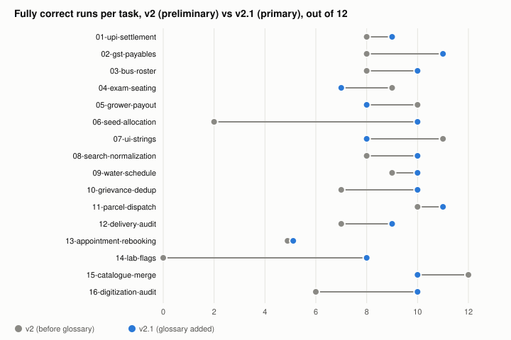
| Task | Domain | GLM /6 | Nemotron /6 | EN files /6 | HI files /6 | v2.1 /12 | v2 /12 | Mean field score |
|---|---|---|---|---|---|---|---|---|
| 01-upi-settlement | finance | 5 | 4 | 4 | 5 | 9 | 8 | 89.8 |
| 02-gst-payables | finance | 6 | 5 | 6 | 5 | 11 | 8 | 91.7 |
| 03-bus-roster | schools | 6 | 4 | 6 | 4 | 10 | 8 | 83.3 |
| 04-exam-seating | schools | 2 | 5 | 4 | 3 | 7 | 9 | 98.5 |
| 05-grower-payout | agriculture | 6 | 2 | 4 | 4 | 8 | 10 | 80.1 |
| 06-seed-allocation | agriculture | 4 | 6 | 6 | 4 | 10 | 2 | 98.6 |
| 07-ui-strings | localization | 2 | 6 | 5 | 3 | 8 | 11 | 98.5 |
| 08-search-normalization | localization | 6 | 4 | 5 | 5 | 10 | 8 | 91.6 |
| 09-water-schedule | municipal | 4 | 6 | 6 | 4 | 10 | 9 | 99.6 |
| 10-grievance-dedup | municipal | 4 | 6 | 4 | 6 | 10 | 7 | 96.7 |
| 11-parcel-dispatch | logistics | 6 | 5 | 6 | 5 | 11 | 10 | 91.7 |
| 12-delivery-audit | logistics | 5 | 4 | 6 | 3 | 9 | 7 | 95.7 |
| 13-appointment-rebooking | clinic | 4 | 1 | 3 | 2 | 5 | 5 | 56.9 |
| 14-lab-flags | clinic | 6 | 2 | 4 | 4 | 8 | 0 | 82.8 |
| 15-catalogue-merge | archives | 4 | 6 | 6 | 4 | 10 | 12 | 90.3 |
| 16-digitization-audit | archives | 4 | 6 | 6 | 4 | 10 | 6 | 99.9 |
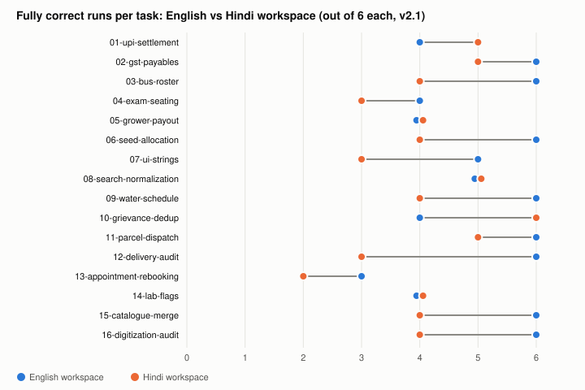
vendor/harnessbench) across 8 categories. Instruction bodies were translated to Hindi and Hinglish; technical literals, fixtures, required English prose outputs and the original deterministic graders stayed fixed.| Model | Language | n | Mean | 95% CI | Median | Full completions | Zero scores | Budget exhausted |
|---|---|---|---|---|---|---|---|---|
| GPT-OSS-20B | English | 50 | 39.95 | 30.2-49.9 | 28.8 | 5 | 9 | 9 |
| GPT-OSS-20B | Hindi | 50 | 45.86 | 36.7-55.0 | 44.7 | 4 | 6 | 6 |
| GPT-OSS-20B | Hinglish | 50 | 34.14 | 25.0-43.4 | 17.1 | 4 | 8 | 9 |
| Nemotron 3 Super | English | 50 | 50.99 | 40.8-61.0 | 55.0 | 6 | 4 | 7 |
| Nemotron 3 Super | Hindi | 50 | 53.58 | 43.4-63.8 | 59.4 | 7 | 5 | 7 |
| Nemotron 3 Super | Hinglish | 50 | 49.07 | 38.8-59.7 | 46.7 | 5 | 6 | 7 |
| Contrast | Mean diff | 95% CI | Wins / losses / ties |
|---|---|---|---|
| Nemotron − GPT-OSS, overall | +11.2 | +1.0 to +21.3 | 29 / 19 / 2 |
| Nemotron − GPT-OSS, English | +11.0 | −1.7 to +23.5 | 20 / 13 / 17 |
| Nemotron − GPT-OSS, Hindi | +7.7 | −5.7 to +20.6 | 24 / 14 / 12 |
| Nemotron − GPT-OSS, Hinglish | +14.9 | +1.9 to +28.0 | 24 / 11 / 15 |
| GPT-OSS: English − Hindi | −5.9 | −16.5 to +4.5 | |
| GPT-OSS: English − Hinglish | +5.8 | −3.8 to +15.6 | |
| Nemotron: English − Hindi | −2.6 | −13.0 to +7.1 | |
| Nemotron: English − Hinglish | +1.9 | −5.7 to +9.4 |
| Category | Tasks | GPT-OSS | Nemotron | Diff (pp) |
|---|---|---|---|---|
| Office & Business Communication | 7 | 45.9 | 74.1 | +28.2 |
| Knowledge, Evidence & Retrieval | 6 | 19.6 | 45.1 | +25.5 |
| Long-running Autonomy & State Adaptation | 6 | 43.8 | 62.2 | +18.4 |
| SRE, DevOps & Release Ops | 6 | 34.2 | 47.7 | +13.4 |
| Data, BI & Finance Analytics | 7 | 39.0 | 47.0 | +8.0 |
| Vertical Professional Workflows | 5 | 34.2 | 42.0 | +7.7 |
| Workspace, Tool Use & Multimodal Operations | 6 | 50.6 | 49.4 | −1.2 |
| Software Engineering & Codebase Maintenance | 7 | 49.3 | 39.6 | −9.6 |
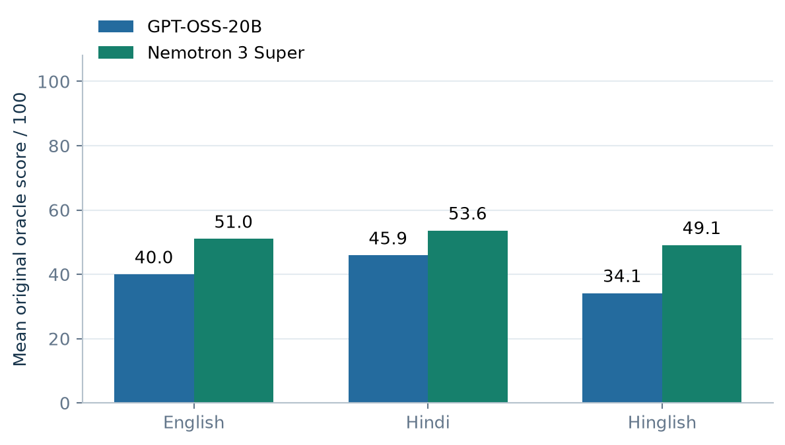
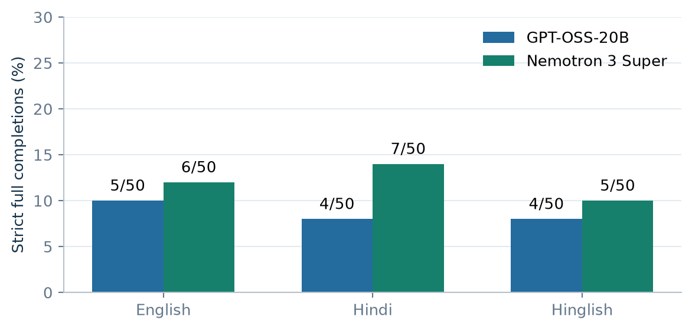
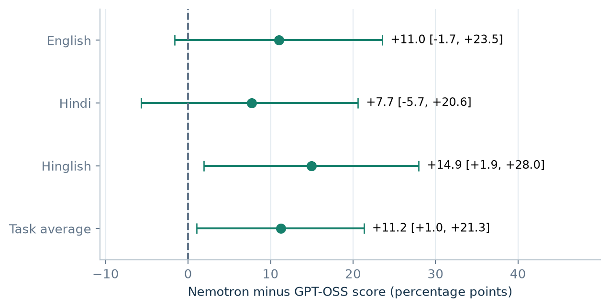
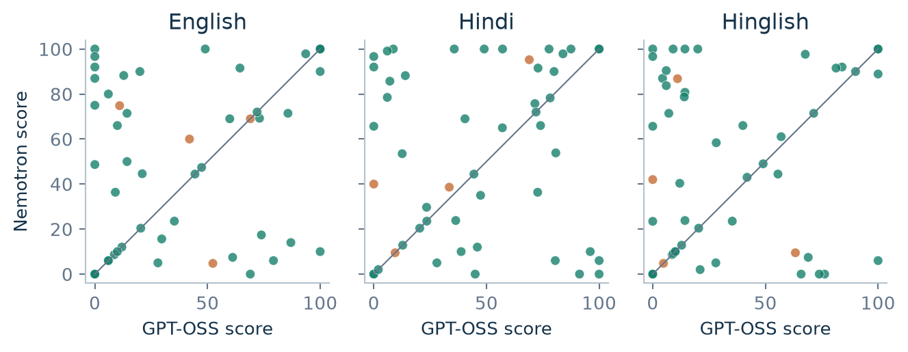
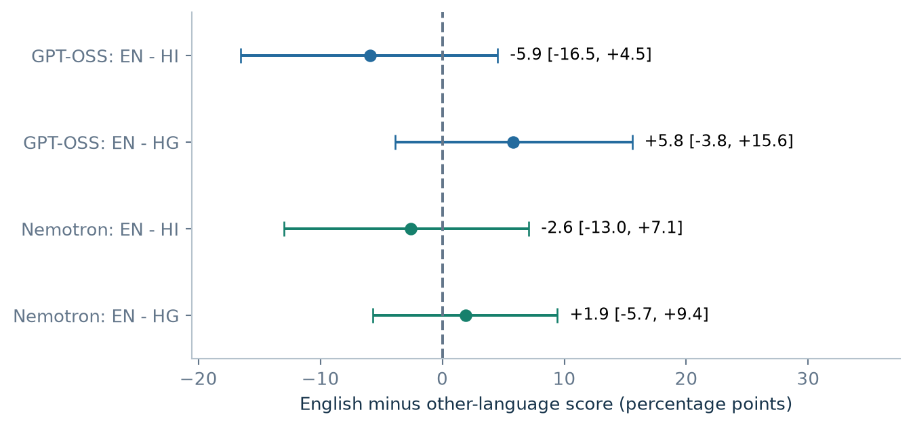
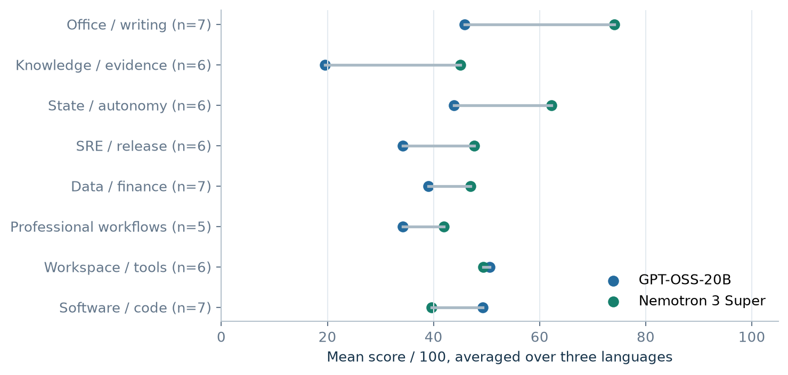
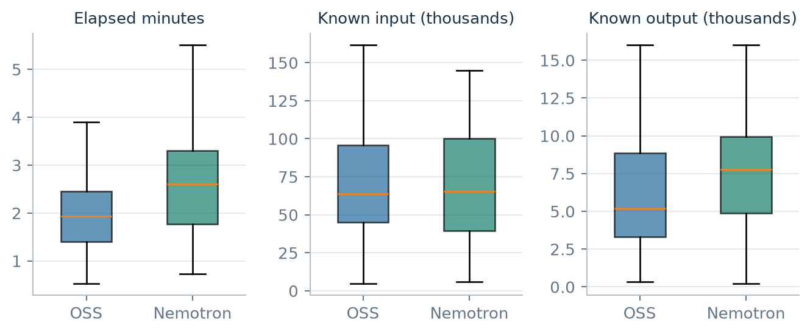
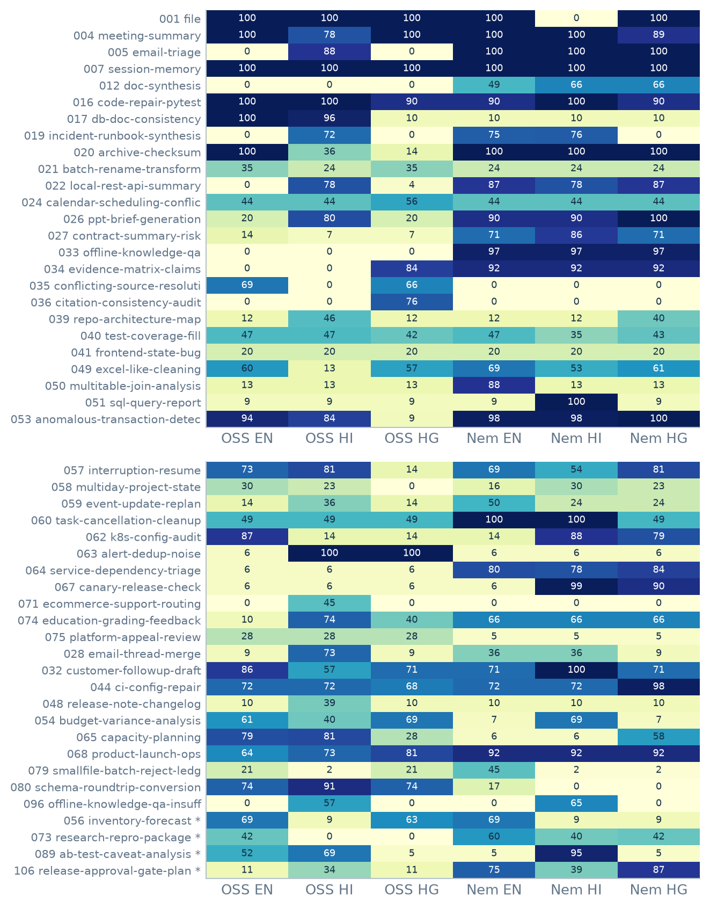
phase2/results/final-v21/infrastructure_retries.json. 7 retries scored 100; the 2 task-13 Nemotron retries used the full output budget without a file. All 192 conditions have a graded result.| Paper section | Material from this page |
|---|---|
| Introduction | Research question; the two factors (instruction vs workspace language); headline 84.4% vs 67.7% |
| Related work | Not covered here: your own literature search |
| Benchmark design | Section 2: domains, rule types, Hindi workspace rendering, parse-back check, rule ablations, grading rules |
| Experimental setup | Models, harness, container isolation, budgets table, outcome definitions, one run per condition |
| Results | Section 3 tables, Figures p2_f1, p2_f2, p2_f4; paired counts as the main within-task evidence |
| Failure analysis | Section 4: two failure styles, outcome table, p2_f3, p2_f6, typical wrong fields |
| Benchmark validity | Section 5: v2 audit, glossary fix, transitions table, noise floor, p2_f5 |
| Earlier study / appendix | Section 7 (phase 1) and its figures |
| Limitations, ethics | Section 9; container isolation and credential handling from section 1 |
| File | Contents |
|---|---|
paper_kit/tables/p2_v21_by_factor.csv | All factor and interaction rows in section 3 |
paper_kit/tables/p2_paired_comparisons.csv | Paired counts for v2 and v2.1, with the unadjusted exact p |
paper_kit/tables/p2_v21_by_task.csv, p2_v21_by_domain.csv | Section 6 |
paper_kit/tables/p2_v21_outcomes_model_workspace.csv, p2_outcomes_v2_vs_v21.csv, p2_v2_to_v21_transitions.csv | Sections 4 and 5 |
paper_kit/tables/p2_v21_extra_facts.json | Totals, conditional accuracy, task win counts |
phase2/results/final-v21/analysis/conditions.csv | One row per v2.1 condition (raw source for everything above) |
phase2/results/final/analysis/conditions.csv | Same for v2 |
phase2/DESIGN-v2.md | Design notes, ablation table, v2.1 change, limitations |
phase2/reports/*.html | The project's own v2.1 findings and audit reports |
output/pdf/report_data/ | Phase 1 matched conditions, task atlas, analysis summary |
output/pdf/Indic_Harness_Bench_50_Task_Combined_Report.pdf | Phase 1 full report |
Recompute the phase 2 tables with py -B -X utf8 -m phase2.analysis.summarize final-v21 --compare final. Phase 1 checks: python -B -X utf8 -m scripts.portable summary.